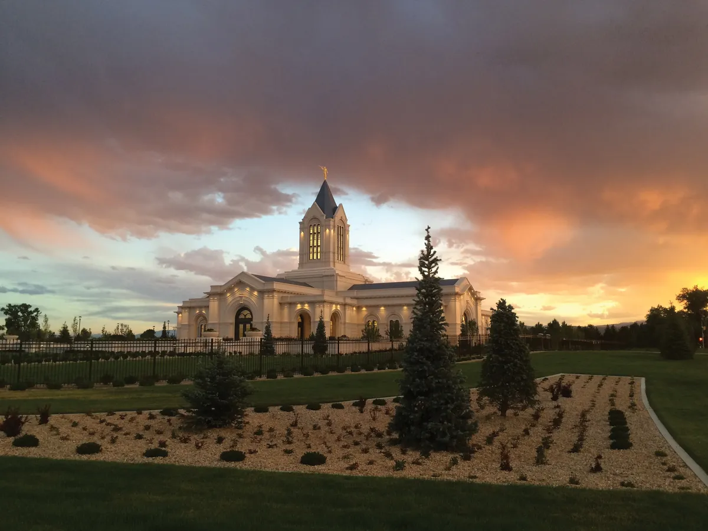
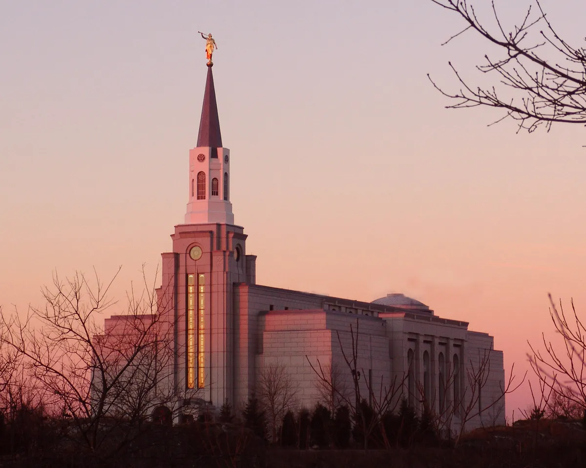
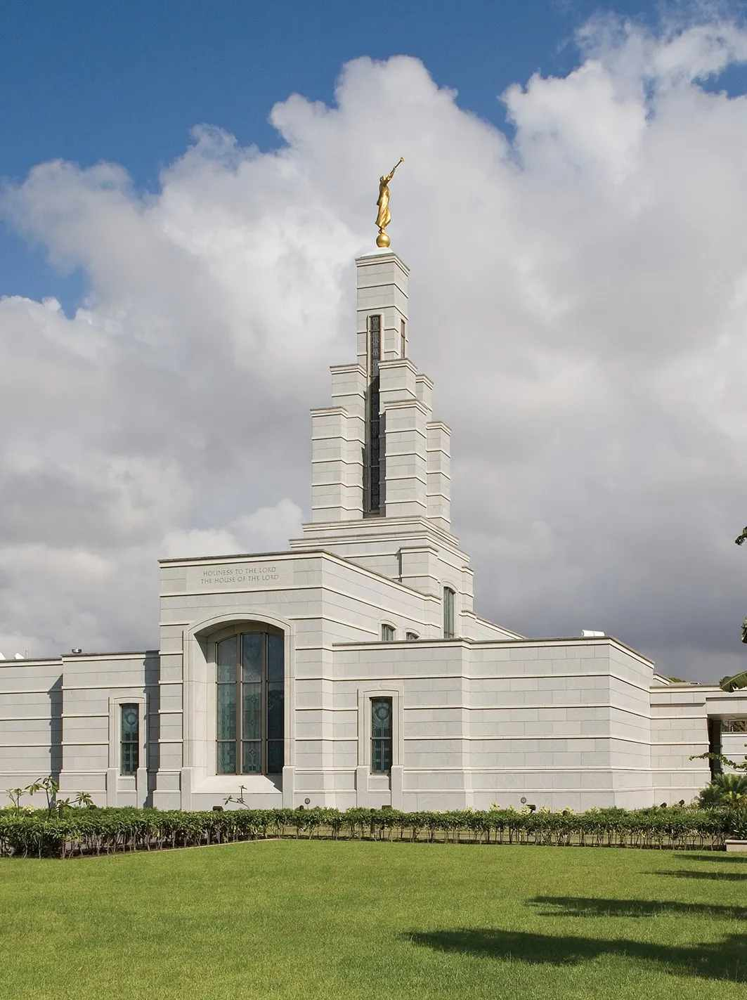
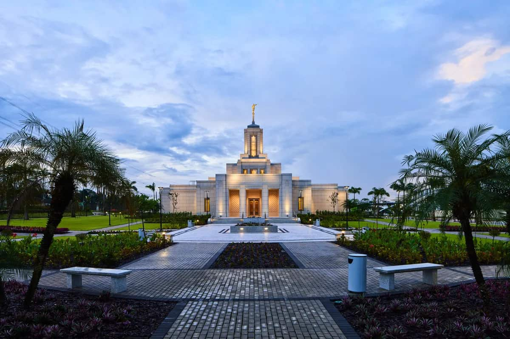
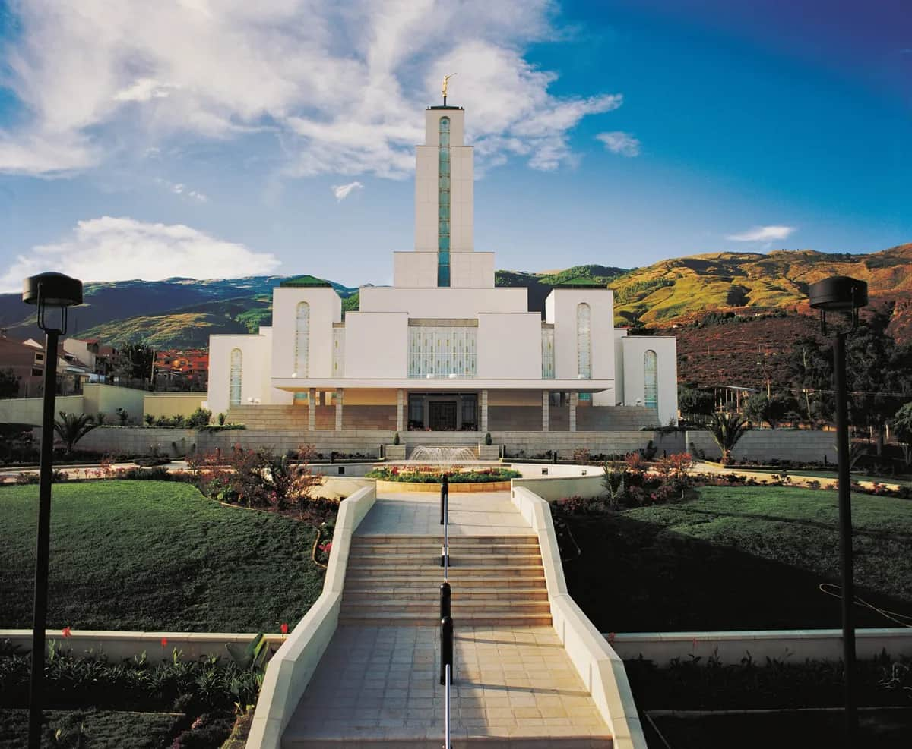

Temple Album
☰
Home
Old
New
Large
Small
Home

Fort Collins Colorado Temple
Brussels Belgium Temple
Guayaquil Ecuador Temple
Halifax Nova Scotia Temple

Boston Massachusetts Temple

Accra Ghana Temple

Belem Brazil Temple

Cochabamba Bolivia Temple
Dallas Texas Temple